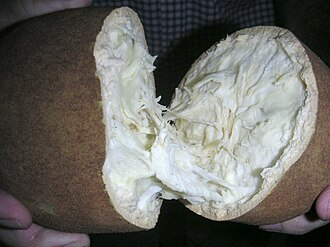

Depoimento de um produtor

A AgroFeira ajuda os produtores a divulgar seus produtos e facilita o contato com as pessoas que procuram produtos da região.

A AgroFeira ajuda os produtores a divulgar seus produtos e facilita o contato com as pessoas que procuram produtos da região.
Você pode cadastrar mandioca, banana-prata, açaí, pimenta-do-reino, cupuaçu ou alface.
O produtor pode levar os produtos à feira ou escolher que a feira faça a retirada na propriedade.
Não. Os preços podem variar de acordo com a semana, a oferta e a disponibilidade dos produtos.